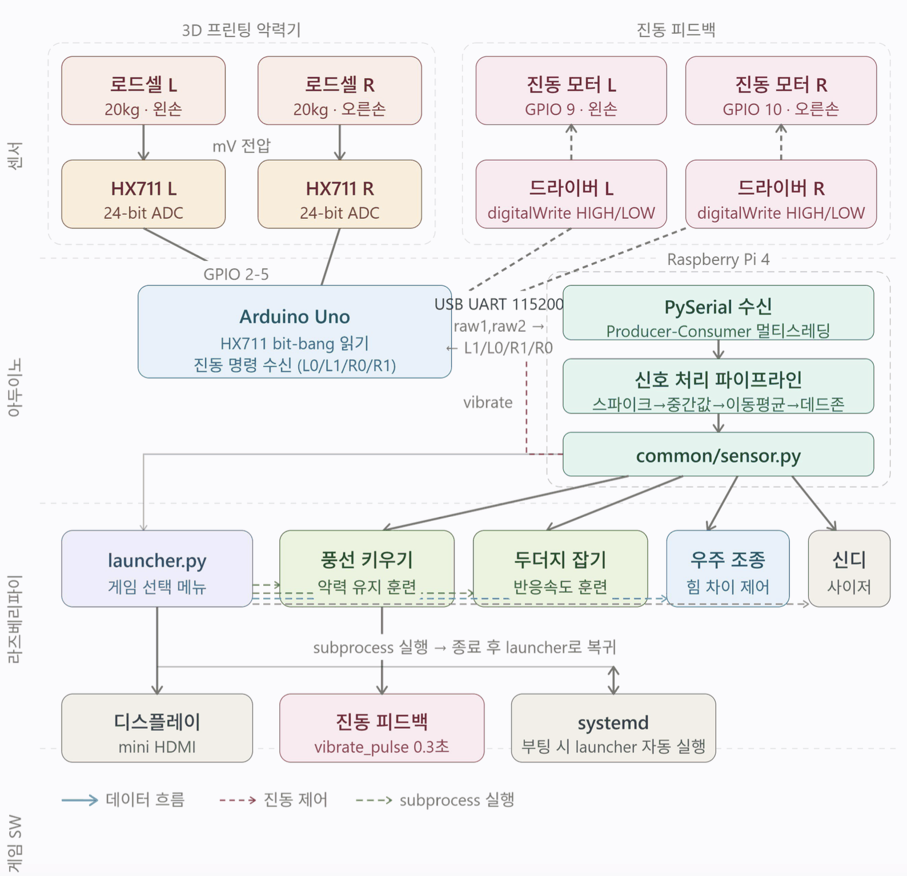
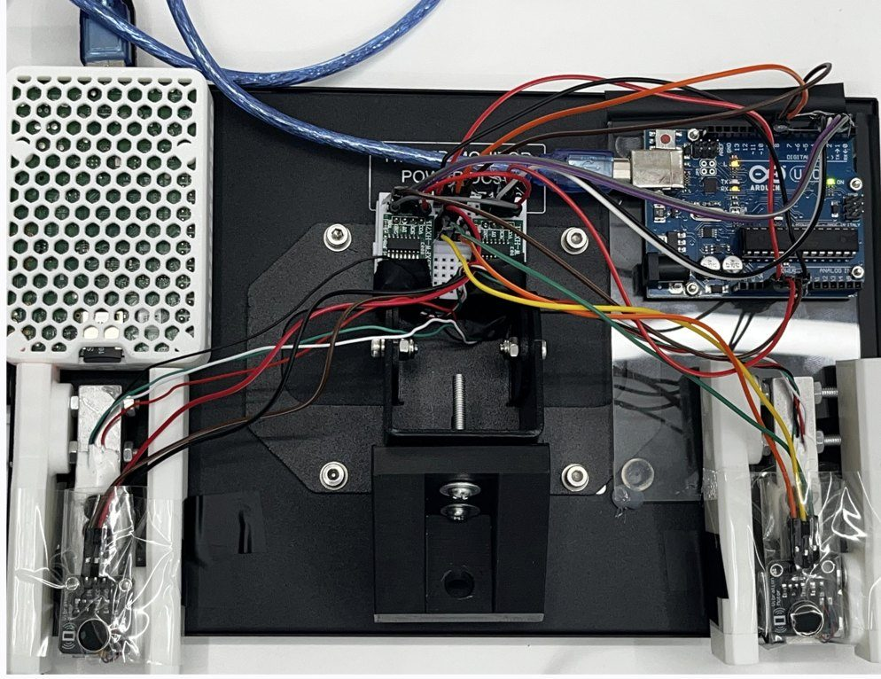

악력 재활 훈련 시스템
악력으로 조작하는 재활 훈련 게임
Impact
- 4단 필터스파이크 → 중간값 → 이동평균 → 데드존8 kg 급상승 차단 · 1 kg 미만은 0
- 4개의 소프트웨어게임 3종과 악력 신디사이저요구하는 입력 특성이 서로 다름
- 스레드 분리센서 80 Hz · 게임 루프 60 Hz큐 대신 최신값 하나만 읽음
Background
인구가 고령화되면서, 상지 기능이 떨어지는 환자가 늘고 있습니다.
악력은 생활 능력과 인지 기능의 지표로 쓰여, 꾸준한 측정과 훈련이 필요합니다.
그러나 기존 재활은 단순 반복이라 지루하고, 측정과 훈련이 나뉘어, 경과가 쌓이지 않습니다.
상용 장비는 비싸고 조작이 복잡해, 인지 기능이 떨어진 사용자는 쓰기 어렵습니다.
저비용 부품으로 하드웨어를 만들어, 측정·훈련·피드백을 하나로 묶었습니다.
모든 조작을 악력만으로 하게 해, 훈련을 이어가며, 상지 기능의 향상을 목표로 합니다.
Architecture

Contributions
하드웨어 설계
로드셀은 미세한 전압 변화만 내보내, HX711이 24비트로 증폭해 읽습니다.
아두이노가 두 채널을 받아, 라즈베리파이로 넘깁니다.
- 로드셀 2개 — 왼손과 오른손 각각 20 kg
- HX711을 라이브러리 없이 bit-bang으로 직접 읽음
- 진동 모터는 HIGH/LOW 신호로만 동작

4단 필터 — 순서가 설계
스파이크 제거, 중간값, 이동평균, 데드존 순서로 걸렀습니다.
- 스파이크 제거 — 직전 값보다 8 kg 이상 뛰면 직전 값으로
- 중간값 — 윈도우 3, 산발적 이상치를 걸러냄
- 이동평균 — 윈도우 5, 유지 구간의 미세 진동을 다듬음
- 데드존 — 1 kg 미만은 0, 손을 뗀 상태를 확실히 구분
스레드 분리
센서는 80 Hz, 게임 루프는 60 Hz 고정 dt로 돕니다.
- 메인에서 시리얼을 읽으면 읽기 지연이 프레임 드롭이 됨
- 잠금으로 보호한 최신값 하나만 읽고 큐는 쓰지 않음
사용자별 캘리브레이션
로드셀은 개체마다 스케일이 다르고, 조립 상태에 따라 영점이 달라집니다.
- 첫 실행에서 영점 3초, 최대 악력 5초를 측정
- calibration.json 에 남겨 다음 실행부터 재사용
- 측정한 최대 악력으로 그 사람 기준 난이도를 잡음
Troubleshooting
진동이 울리면 오른손 센서가 끊김
- 문제
- 진동 모터가 돌 때만 한쪽 로드셀 값이 사라짐
- 원인
- 신호 간섭이 아니라 전류 부하. 모터를 아두이노 핀에서 직접 구동해, 센서 쪽 전원이 흔들림
- 해결
- NPN 트랜지스터로 모터 구동 회로를 분리. 모터는 켜고 끄기만 하고 세기는 조절하지 않음
- 결과
- 회로를 바꿔 해결. 양손 값이 함께 유지됨
원신호를 그대로 쓰면 조작이 안 됨
- 문제
- 손이 닿는 순간의 값이 최대 악력으로 기록됨. 유지 구간에서도 캐릭터가 떨림
- 원인
- 로드셀이 온도와 진동에 민감해, 순간 스파이크와 미세한 떨림이 함께 들어감
- 해결
- 네 단계 필터를 순서까지 고정해 적용. 캘리브레이션도 필터를 통과한 값으로만 잡음
- 결과
- 쥐는 힘이 그대로 입력이 됨
필터를 세게 걸면 반응이 느려짐
- 문제
- 이동평균 윈도우를 키우면 신호는 매끄러운데, 두더지 잡기 반응이 늦어짐
- 원인
- 평활과 지연은 맞바꿈. 풍선은 안정성을, 두더지는 응답속도를 요구해 서로 반대
- 해결
- 중간값 3, 이동평균 5 조합으로 균형점을 잡음
- 결과
- 네 응용이 같은 파이프라인 하나로 동작
소리가 밀리고 음이 바뀔 때 Pop Noise 발생
- 문제
- 힘을 바꿔도 소리가 늦게 따라옴. 음이 바뀌는 순간 Pop Noise
- 원인
- aplay 파이프에 데이터가 쌓여 지연 누적. 주파수를 바꾸면 파형이 끊겨 Pop Noise
- 해결
- 청크 하나 재생 시간만큼 기다려 파이프를 비움. 위상을 누적해 파형을 이어 감
- 결과
- 지연이 ALSA 하드웨어 버퍼만 남음